SoftCTRL: Soft conservative KL-control of Transformer Reinforcement Learning
for Autonomous Driving
Abstract
In recent years, motion planning for urban self-driving cars (SDV) has become a popular problem due to its complex interaction of road components. To tackle this, many methods have relied on large-scale, human-sampled data processed through Imitation learning (IL). Although effective, IL alone cannot adequately handle safety and reliability concerns. Combining IL with Reinforcement learning (RL) by adding KL divergence between RL and IL policy to the RL loss can alleviate IL's weakness but suffer from over-conservation caused by covariate shift of IL. To address this limitation, we introduce a method that combines IL with RL using an implicit entropy-KL control that offers a simple way to reduce the over-conservation characteristic. In particular, we validate different challenging simulated urban scenarios from the unseen dataset, indicating that although IL can perform well in imitation tasks, our proposed method significantly improves robustness (over 17% reduction in failures) and generates human-like driving behavior.
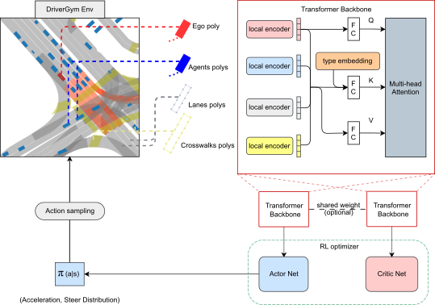Sample Outputs
Qualitative results. Demostrations of SoftCTRL in the unseen test set. Each video is a 25-second scenario, SDV in red, other agents in blue, crosswalks in yellow, SDV trajectory in the green line, SDV ground-truth trajectory in yellow line.
Overview
Combining IL and RL is crucial to enhance realism with large-scale human driving datasets and safety with causal relationship modeling. Traditional KL-loss methods use IL (teacher) policy to constrain RL (student) policy. However, these approach may lead to the over-conservation problem caused by covariate shift of IL. This issue happens when IL trained with logged datasets guide RL students in online training process, where exploration is possible. Accumulated single-step errors can cause planned states to diverge from the dataset distribution, resulting in a compounding error issue. Therefore, this constraint force causes the RL student to be too conservative with the estimated expert policies to prevent the model from searching for a global solution.
To address these problems, we propose a Soft conservative KL-ConTrol of RL model (SoftCTRL) for autonomous driving, a novel approach for off-policy RL. First, we use a pretrained Transformer IL model to constrain RL updates with simple rewards. During the training step, the RL policy is implicitly regularized by the KL divergence from this prior model and the entropy of its actions. The entropy term encourages the model to generate more diverse trajectories. This combats the over-conservation issues when retaining the proximity to the distribution of the realistic IL model by KL control. Our experiments show that a simple reward combining imitation with collision is sufficient for our proposed method. Also, our new approach beat the pretrained IL model by a large margin in overall tasks, demonstrating that our approach is not affected by the covariate shift of IL.
Method
We propose SoftCTRL - a novel implicit entropy-KL control approach for RL fine-tuning. By leverage IL and RL advantages while mitigating the over-conservation issue inherent in traditional KL-regularized methods, SoftCTRL surpasses the performance of its IL baseline.
SoftCTRL is built on SAC, we simply modify the regression target of the policy evaluation step in SAC by adding the scaled log policy of reference behavioral method to the reward in any TD scheme.
Quantitative Result
Quantitative results. Evaluation of different methods using closed-loop evaluation in DriverGym on 100 sampled scenarios. Lower is better. The values in the table are expressed as mean ± standard deviation. Our SAC-ImKL (or SoftCTRL) method improves safety over BC-perturb baselines by reducing the collision rate while performing as smoothly as BC-perturb
Highlight Results
| BC | SAC | SAC-ExKL | SAC-ImKL |
| 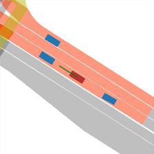 | 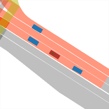 | 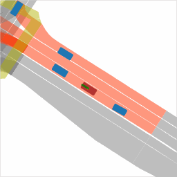 | |
| 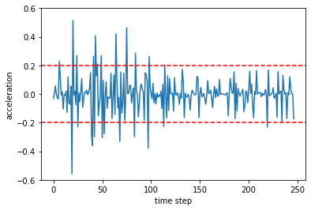 | 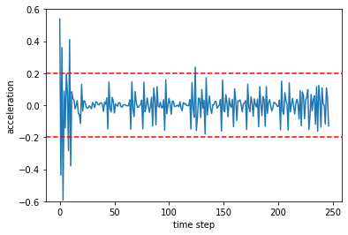 | 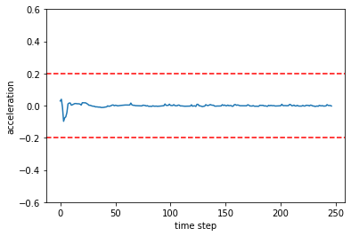 | 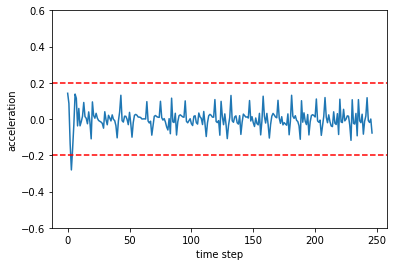 |
| BC | SAC | SAC-ExKL | SAC-ImKL |
| 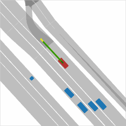 | |||
| 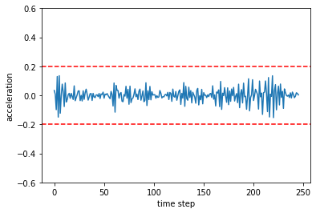 | 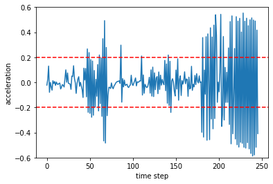 | 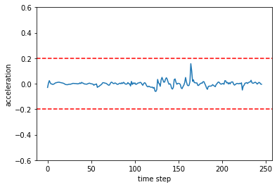 | 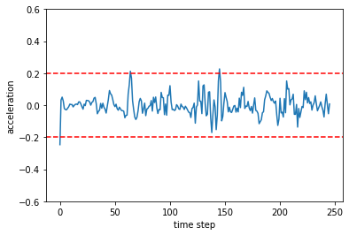 |
| BC | SAC | SAC-ExKL | SAC-ImKL |
| 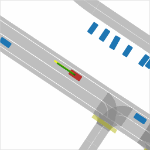 | 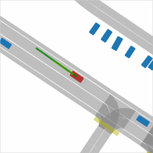 | ||
| 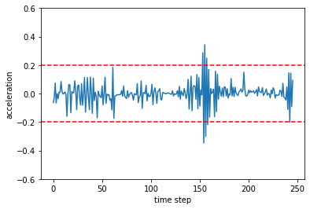 | 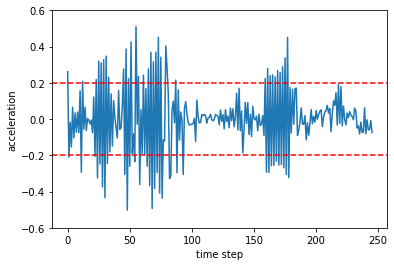 | 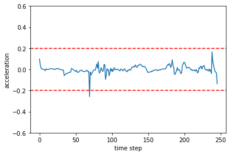 | 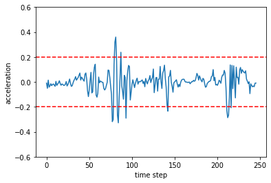 |
Paper and Supplementary Material
 Tri, Huynh and Dung, Nguyen.
Tri, Huynh and Dung, Nguyen.SoftCTRL: Soft conservative KL-control of Transformer Reinforcement Learning
for Autonomous Driving
ArXiv preprint, 2024.
(hosted on ArXiv)
@misc{huynh2024softctrl,
title={SoftCTRL: Soft conservative KL-control of Transformer Reinforcement Learning for Autonomous Driving},
author={Minh Tri Huynh and Duc Dung Nguyen},
year={2024}
eprint={2410.22752},
archivePrefix={arXiv},
primaryClass={cs.RO},
url={https://arxiv.org/abs/2410.22752},
}Acknowledgements
The computational resource for this work is supported by Innovation FabLab, Ho Chi Minh City University of Technology (HCMUT).